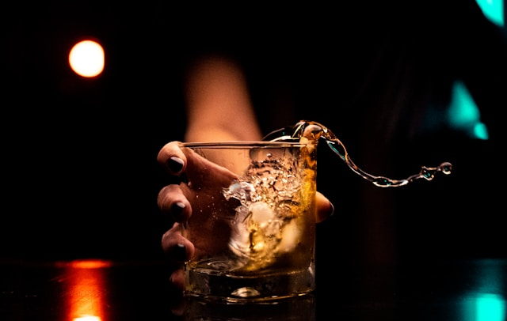
Este whisky hara de tus papilas gustativas un deleite
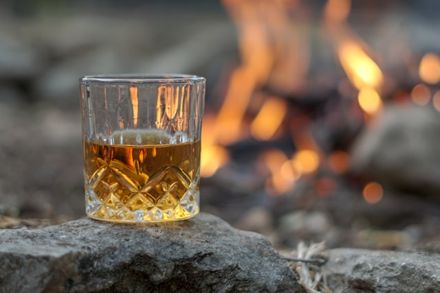
Ni Johnny Walker ni Jack Daniels se comparan a este whisky de
mercadona
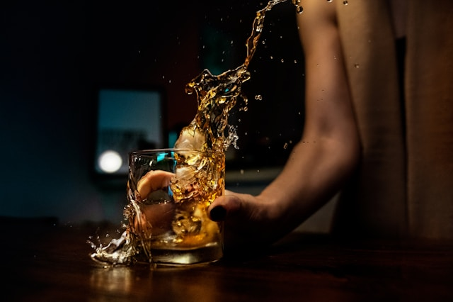
El whisky es tu enemigo, ¡Combatelo!
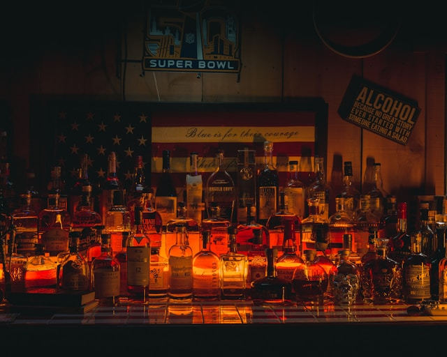
La mejor pelicula para ver mientras te tomas un whisky
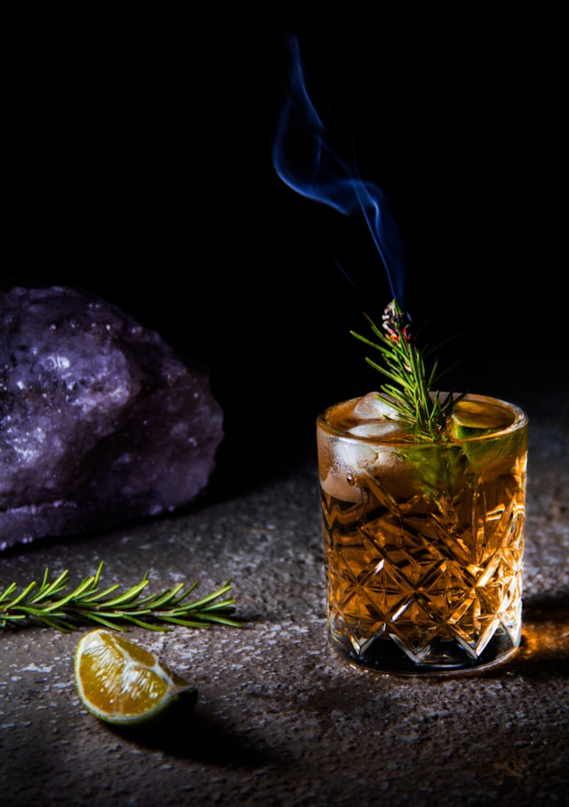
Tarantino whisly style
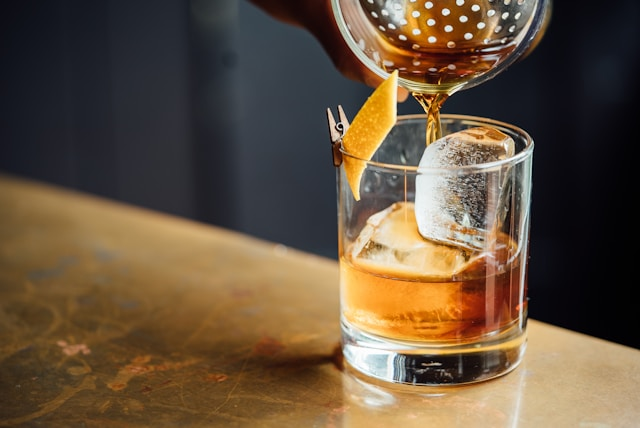
La elegancia de un buen whisky
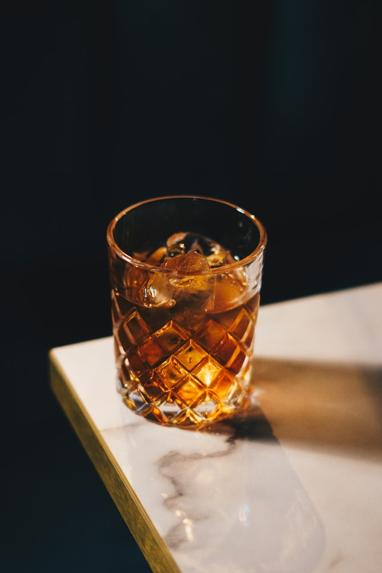
Un vaso de whisty cualquiera #1
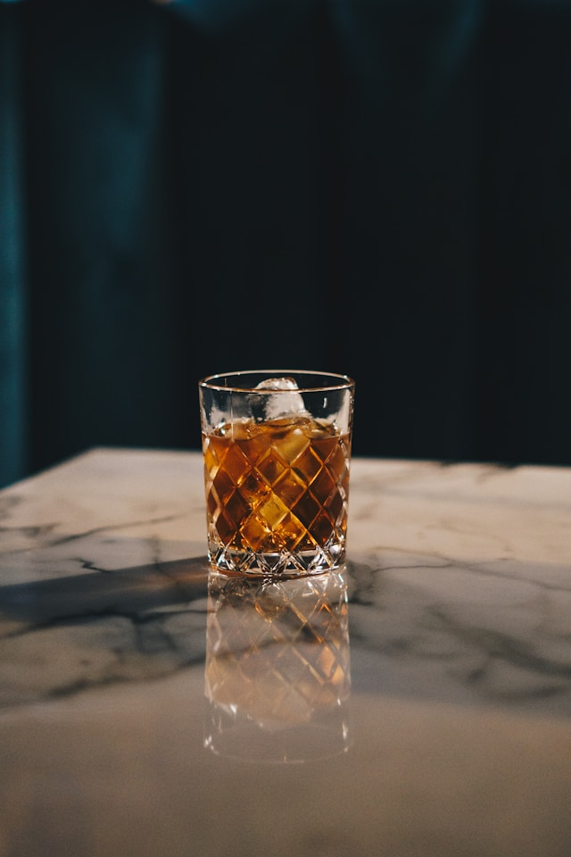
Un vaso de whisty cualquiera #2
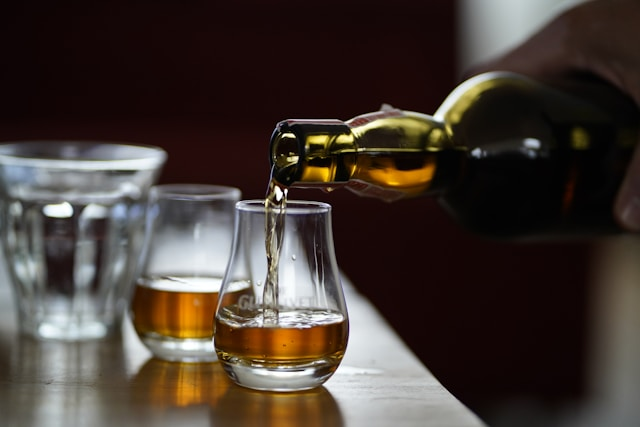
¿Whisky o aceite? ¿Qué es mejor?
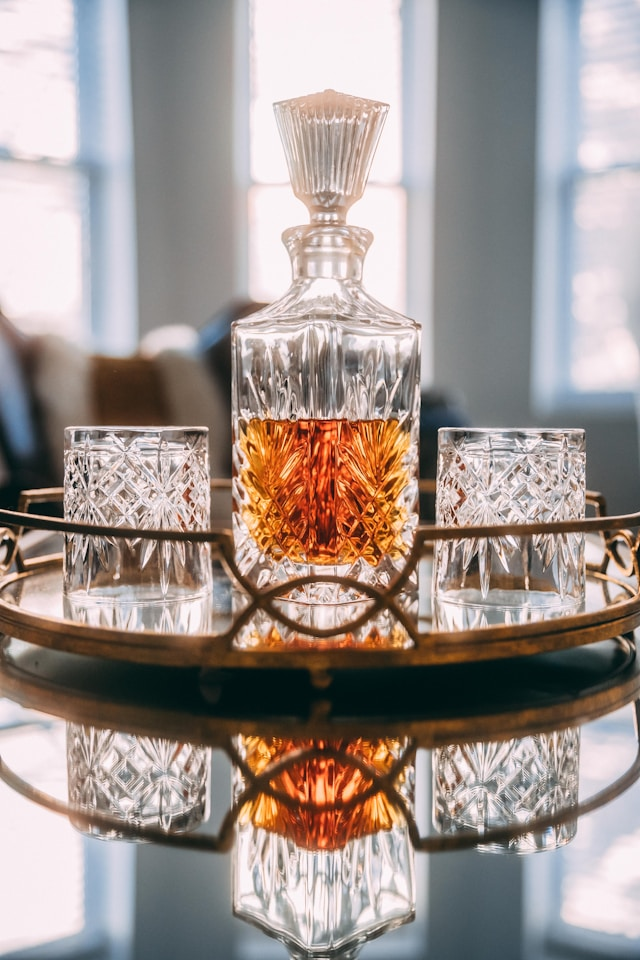
La bandeja del whisky
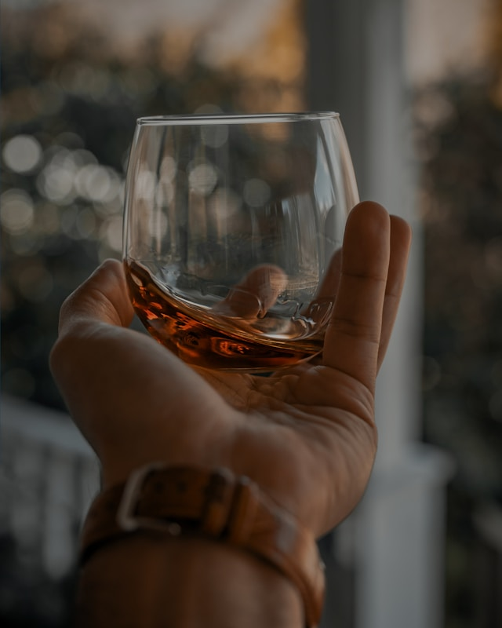
Vaso de whisky encima de una mano
¿Cómo se sirve un buen whisky? Guía para principiantes
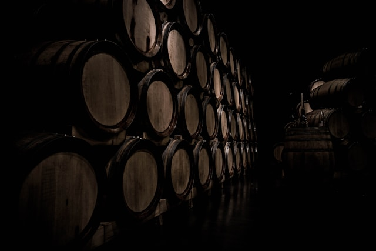
Lujuria en la bodega
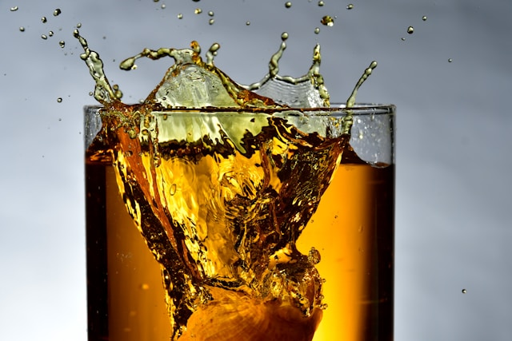
Drop Ice in a glass of whisky
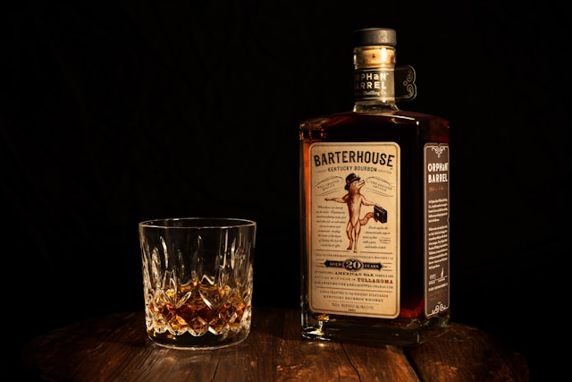
El whisky que nunca pasa de moda
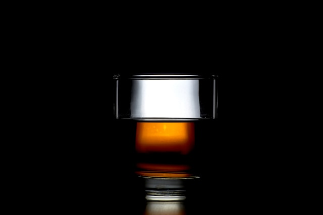
Un buen whisky servido en una buena copa
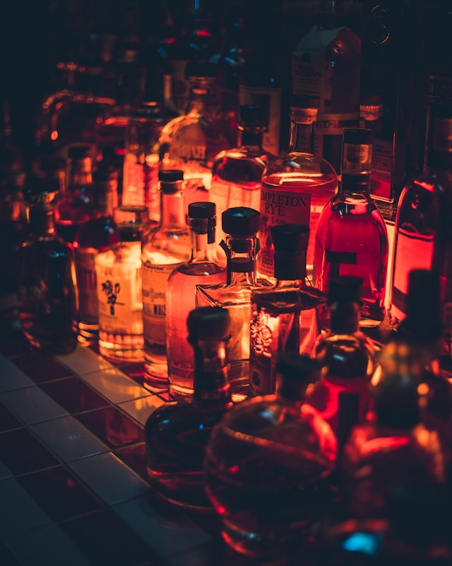
El laboratorio del loco